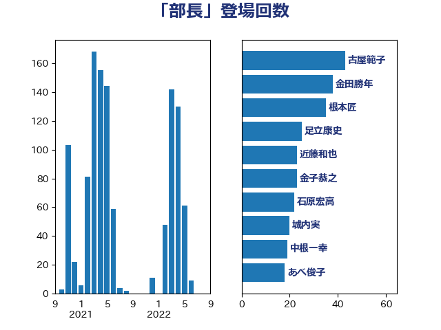

単語「部長」

| 古屋範子 | 公明党 | 43 回 |
| 金田勝年 | 自由民主党 | 38 回 |
| 根本匠 | 自由民主党 | 35 回 |
| 足立康史 | 日本維新の会 | 25 回 |
| 近藤和也 | 立憲民主党 | 23 回 |
| 金子恭之 | 自由民主党 | 23 回 |
| 石原宏高 | 自由民主党 | 22 回 |
| 城内実 | 自由民主党 | 20 回 |
| 中根一幸 | 自由民主党 | 19 回 |
| あべ俊子 | 自由民主党 | 18 回 |
| 小西洋之 | 立憲民主党 | 18 回 |
| あかま二郎 | 自由民主党 | 17 回 |
| 鈴木馨祐 | 自由民主党 | 17 回 |
| 義家弘介 | 自由民主党 | 16 回 |
| 赤羽一嘉 | 公明党 | 16 回 |
| 奥野総一郎 | 立憲民主党 | 15 回 |
| 関芳弘 | 自由民主党 | 14 回 |
| 大塚拓 | 自由民主党 | 13 回 |
| 木原誠二 | 自由民主党 | 13 回 |
| 萩生田光一 | 自由民主党 | 13 回 |
| 薗浦健太郎 | 自由民主党 | 13 回 |
| 山岡達丸 | 立憲民主党 | 12 回 |
| 岸真紀子 | 立憲民主党 | 12 回 |
| 後藤祐一 | 立憲民主党 | 12 回 |
| 橋本岳 | 自由民主党 | 12 回 |
| 伊東良孝 | 自由民主党 | 11 回 |
| 石田真敏 | 自由民主党 | 11 回 |
| 越智隆雄 | 自由民主党 | 10 回 |
| 逢坂誠二 | 立憲民主党 | 10 回 |
| 高鳥修一 | 自由民主党 | 7 回 |
| 井上英孝 | 日本維新の会 | 6 回 |
| 宮本岳志 | 日本共産党 | 6 回 |
| 小里泰弘 | 自由民主党 | 6 回 |
| 川田龍平 | 立憲民主党 | 6 回 |
| 永岡桂子 | 自由民主党 | 6 回 |
| 渡辺博道 | 自由民主党 | 6 回 |
| 穀田恵二 | 日本共産党 | 6 回 |
| 伊藤忠彦 | 自由民主党 | 5 回 |
| 勝俣孝明 | 自由民主党 | 5 回 |
| 原口一博 | 立憲民主党 | 5 回 |
| 大串博志 | 立憲民主党 | 5 回 |
| 林芳正 | 自由民主党 | 5 回 |
| 田村貴昭 | 日本共産党 | 5 回 |
| 細野豪志 | 自由民主党 | 5 回 |
| 芳賀道也 | 国民民主党 | 5 回 |
| 若宮健嗣 | 自由民主党 | 5 回 |
| 阿部弘樹 | 日本維新の会 | 5 回 |
| 阿部知子 | 立憲民主党 | 5 回 |
| 嘉田由紀子 | 無所属 | 4 回 |
| 山井和則 | 立憲民主党 | 4 回 |
| 海江田万里 | 立憲民主党 | 4 回 |
| 石川大我 | 立憲民主党 | 4 回 |
| 福島伸享 | 無所属 | 4 回 |
| 笠井亮 | 日本共産党 | 4 回 |
| 自見はなこ | 自由民主党 | 4 回 |
| 茂木敏充 | 自由民主党 | 4 回 |
| 赤澤亮正 | 自由民主党 | 4 回 |
| 馬淵澄夫 | 立憲民主党 | 4 回 |
| 鶴保庸介 | 自由民主党 | 4 回 |
| 井上信治 | 自由民主党 | 3 回 |
| 伊波洋一 | 無所属 | 3 回 |
| 加藤勝信 | 自由民主党 | 3 回 |
| 務台俊介 | 自由民主党 | 3 回 |
| 和田有一朗 | 日本維新の会 | 3 回 |
| 塩川鉄也 | 日本共産党 | 3 回 |
| 大島敦 | 立憲民主党 | 3 回 |
| 寺田学 | 立憲民主党 | 3 回 |
| 小泉進次郎 | 自由民主党 | 3 回 |
| 山田俊男 | 自由民主党 | 3 回 |
| 岸信夫 | 自由民主党 | 3 回 |
| 枝野幸男 | 立憲民主党 | 3 回 |
| 梶山弘志 | 自由民主党 | 3 回 |
| 玉木雄一郎 | 国民民主党 | 3 回 |
| 白石洋一 | 立憲民主党 | 3 回 |
| 矢倉克夫 | 公明党 | 3 回 |
| 赤池誠章 | 自由民主党 | 3 回 |
| 野上浩太郎 | 自由民主党 | 3 回 |
| 長妻昭 | 立憲民主党 | 3 回 |
| 長峯誠 | 自由民主党 | 3 回 |
| 青山繁晴 | 自由民主党 | 3 回 |
| 齋藤健 | 自由民主党 | 3 回 |
| 中谷一馬 | 立憲民主党 | 2 回 |
| 伊藤渉 | 公明党 | 2 回 |
| 古川禎久 | 自由民主党 | 2 回 |
| 和田政宗 | 自由民主党 | 2 回 |
| 大西健介 | 立憲民主党 | 2 回 |
| 宮崎政久 | 自由民主党 | 2 回 |
| 小野泰輔 | 日本維新の会 | 2 回 |
| 山崎誠 | 立憲民主党 | 2 回 |
| 平口洋 | 自由民主党 | 2 回 |
| 末松信介 | 自由民主党 | 2 回 |
| 杉本和巳 | 日本維新の会 | 2 回 |
| 松本尚 | 自由民主党 | 2 回 |
| 柿沢未途 | 無所属 | 2 回 |
| 森屋宏 | 自由民主党 | 2 回 |
| 武田良太 | 自由民主党 | 2 回 |
| 浜野喜史 | 国民民主党 | 2 回 |
| 深澤陽一 | 自由民主党 | 2 回 |
| 田嶋要 | 立憲民主党 | 2 回 |
| 石田昌宏 | 自由民主党 | 2 回 |
| 福山哲郎 | 立憲民主党 | 2 回 |
| 秋本真利 | 自由民主党 | 2 回 |
| 美延映夫 | 日本維新の会 | 2 回 |
| 西田昌司 | 自由民主党 | 2 回 |
| 谷田川元 | 立憲民主党 | 2 回 |
| 足立敏之 | 自由民主党 | 2 回 |
| 道下大樹 | 立憲民主党 | 2 回 |
| 階猛 | 立憲民主党 | 2 回 |
| 馬場成志 | 自由民主党 | 2 回 |
| 中谷真一 | 自由民主党 | 1 回 |
| 井上哲士 | 日本共産党 | 1 回 |
| 伊藤孝恵 | 国民民主党 | 1 回 |
| 伊藤岳 | 日本共産党 | 1 回 |
| 前川清成 | 日本維新の会 | 1 回 |
| 勝部賢志 | 立憲民主党 | 1 回 |
| 吉川沙織 | 立憲民主党 | 1 回 |
| 吉田忠智 | 立憲民主党 | 1 回 |
| 吉田統彦 | 立憲民主党 | 1 回 |
| 堤かなめ | 立憲民主党 | 1 回 |
| 大口善徳 | 公明党 | 1 回 |
| 宮内秀樹 | 自由民主党 | 1 回 |
| 宮沢洋一 | 自由民主党 | 1 回 |
| 小宮山泰子 | 立憲民主党 | 1 回 |
| 小森卓郎 | 自由民主党 | 1 回 |
| 山下芳生 | 日本共産党 | 1 回 |
| 山口壯 | 自由民主党 | 1 回 |
| 山口晋 | 自由民主党 | 1 回 |
| 山本順三 | 自由民主党 | 1 回 |
| 山本香苗 | 公明党 | 1 回 |
| 山谷えり子 | 自由民主党 | 1 回 |
| 島村大 | 自由民主党 | 1 回 |
| 川崎ひでと | 自由民主党 | 1 回 |
| 徳永エリ | 立憲民主党 | 1 回 |
| 手塚仁雄 | 立憲民主党 | 1 回 |
| 打越さく良 | 立憲民主党 | 1 回 |
| 斎藤嘉隆 | 立憲民主党 | 1 回 |
| 新妻秀規 | 公明党 | 1 回 |
| 末次精一 | 立憲民主党 | 1 回 |
| 松島みどり | 自由民主党 | 1 回 |
| 柴田巧 | 日本維新の会 | 1 回 |
| 森まさこ | 自由民主党 | 1 回 |
| 森山浩行 | 立憲民主党 | 1 回 |
| 森本真治 | 立憲民主党 | 1 回 |
| 江田憲司 | 立憲民主党 | 1 回 |
| 池田佳隆 | 自由民主党 | 1 回 |
| 浅野哲 | 国民民主党 | 1 回 |
| 浜田靖一 | 自由民主党 | 1 回 |
| 牧山ひろえ | 立憲民主党 | 1 回 |
| 田村憲久 | 自由民主党 | 1 回 |
| 石川昭政 | 自由民主党 | 1 回 |
| 石川香織 | 立憲民主党 | 1 回 |
| 秋野公造 | 公明党 | 1 回 |
| 細田健一 | 自由民主党 | 1 回 |
| 緒方林太郎 | 無所属 | 1 回 |
| 舩後靖彦 | れいわ新選組 | 1 回 |
| 菅直人 | 立憲民主党 | 1 回 |
| 蓮舫 | 立憲民主党 | 1 回 |
| 西岡秀子 | 国民民主党 | 1 回 |
| 西村康稔 | 自由民主党 | 1 回 |
| 谷川とむ | 自由民主党 | 1 回 |
| 野田聖子 | 自由民主党 | 1 回 |
| 金城泰邦 | 公明党 | 1 回 |
| 長浜博行 | 無所属 | 1 回 |
| 長谷川岳 | 自由民主党 | 1 回 |
| 青山大人 | 立憲民主党 | 1 回 |
| 高野光二郎 | 自由民主党 | 1 回 |
| 麻生太郎 | 自由民主党 | 1 回 |